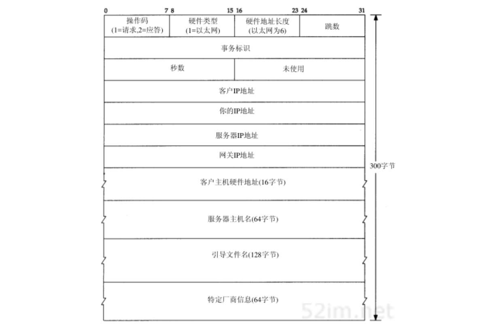
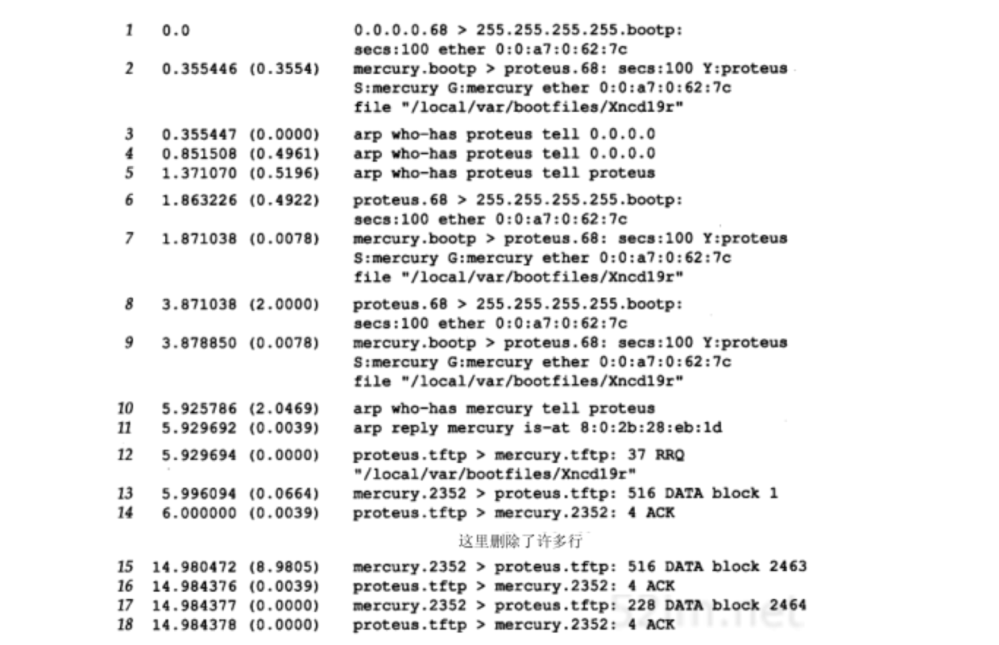
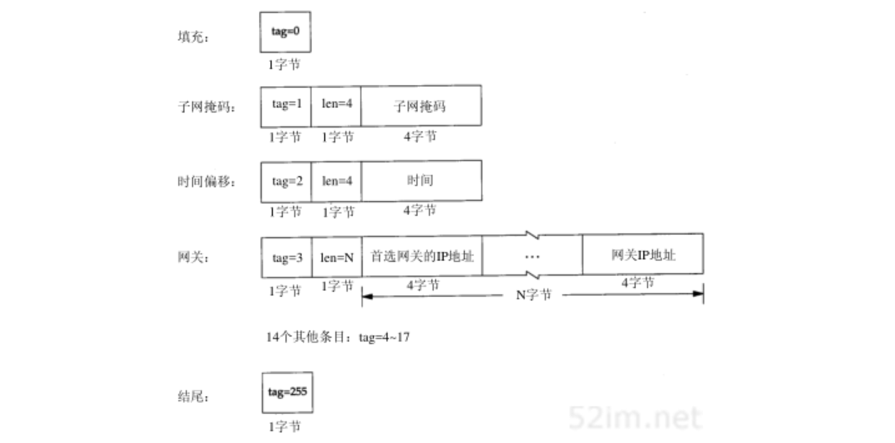

Bootp：引导程序协议
Table of Contents
曾经介绍了一个无盘系统，它在不知道自身IP地址的情况下，在进行系统引导时能够通过RARP来获取它的IP地址。然而使用RARP有两个问题：
- IP地址是返回的唯一结果
- 既然RARP使用链路层广播，RARP请求就不会被路由器转发（迫使每个实际网络设置一个RARP服务器）
本章将介绍一种用于无盘系统进行系统引导的替代方法，又称为BOOTP引导程序协议
BOOTP使用UDP，且通常需与TFTP协同工作。RFC 951是BOOTP的正式规范，RFC 1542则对它作了说明
BOOTP协议
报文
BOOTP请求和应答均被封装在UDP数据报中，如图16-1所示：
图16-2显示了长度为300字节的BOOTP请求和应答的格式：

操作码字段
- 1: 请求
- 2: 应答
硬件类型字段
- 1: 10Mb/s的以太网，这和ARP请求或应答中同名字段表示的含义相同
硬件地址长度字段
类似地对于以太网为6字节
跳数字段
由客户设置为0，但也能被一个代理服务器设置
事务标识字段
由客户设置并由服务器返回的32bit整数。客户用它对请求和应答进行匹配。对每个请求，客户应该将该字段设置为一个随机数
秒数字段
客户开始进行引导时，将 秒数 字段设置为一个时间值。服务器能够看到这个时间值，备用服务器在等待时间超过这个时间值后才会响应客户的请求，这意味着主服务器没有启动
客户IP地址字段
如果该客户已经知道自身的IP地址，它将写入 客户IP地址 字段。否则，它将该字段设置为0
你的IP字段字段
服务器把该客户的IP地址写入 你的IP地址 字段
服务器IP地址字段
由服务器填写
网关IP地址字段
如果使用了某个代理服务器，则该代理服务器就填写 网关IP地址 字段
客户硬件地址字段
客户必须设置它的 客户硬件地址 字段。尽管这个值与以太网数据帧头中的值相同，UDP数据报中也设置这个字段，但任何接收这个数据报的用户进程能很容易地获得它。一个进程通过查看UDP数据报来确定以太网帧首部中的该字段通常是很困难的（或者说是不可能的）
服务器主机名字段
一个空值终止串，由服务器填写
引导文件名字段
服务器还将在 引导文件名字段 填入包括用于系统引导的文件名及其所在位置的路径全名
特定厂商区域字段
用于对BOOTP进行不同的扩展
当一个客户使用BOOTP（操作码为1）进行系统引导时，引导请求通常是采用链路层广播： IP首部中的目的IP地址为255.255.255.255，源IP地址通常是0.0.0.0 因为此时客户还不知道它本身的IP地址。在系统进行自引导时，0.0.0.0是一个有效的IP地址
端口号
BOOTP有两个熟知端口：
- 67 : BOOTP服务器为
- 68 BOOTP客户端
这意味着 BOOTP客户不会选择未用的临时端口，而只用端口68
选择两个端口而不是仅选择一个端口为BOOTP服务器用的原因是，服务器的应答可以进行广播（但通常是不用广播的）：
- 如果服务器的应答是通过广播传送的，同时客户又选择未用的临时端口，那么这些广播也能被其他的主机中碰巧使用相同临时端口的应用进程接收到。因此，采用随机端口（即临时端口）对广播来说是一个不好的选择
- 如果客户也使用服务器的知名端口（67）作为它的端口，那么网络内的所有服务器会被唤醒来查看每个广播应答（如果所有的服务器都被唤醒，它们将检查操作码，如果是一个应答而不是请求，就不作处理）。因此可以让所有的客户使用与服务器知名端口不同的同一知名端口
- 如果多个客户同时进行系统引导，并且服务器广播所有应答，这样每个客户都会收到其他客户的应答。客户可以通过BOOTP首部中的事务标识字段来确认应答是否与请求匹配，或者可以通过检查返回的客户硬件地址加以区分
实例
看一个用BOOTP引导一个X终端的例子。图16-3显示了tcpdump的输出结果（例中客户名为proteus，服务器名为mercury。这个tcpdump的输出是在不同的网络上获得的）：

- 第1行:客户发送请求
- 客户请求来自0.0.0.0.68
- 发送目的站：255.255.255.255.67
- 秒数：设置为100
- 客户硬件地址
- 没有显示跳数和事务标识，因为它们均为0
- 事务标识:0表示该客户忽略这个字段，因为如果打算对返回响应进行验证，它将把这个字段设置为一个随机数值
- 第2行：服务器返回的应答
- 该客户的IP地址：显示为名字proteus
- 服务器的IP地址：显示为名字mercury
- 网关的IP地址：显示为名字mercury
- 引导文件名
- 第3行:在收到BOOTP应答后，该客户立即发送一个ARP请求来了解网络中其他主机是否有IP地址：
- who-has后的名字proteus对应目的IP地址
- 发送者的IP地址被设置为0.0.0.0
- 第4行：客户在0.5秒后再发一个相同的ARP请求
- 第5行：再过0.5秒又发一个相同的ARP请求
- 将发送者的IP地址改变为它自己的IP地址。这是一个没有意义的ARP请求
- 第6行：该客户在等待另一个0.5秒后，广播另一个BOOTP请求
- 这个请求与第1行的唯一不同是此时客户将它的IP地址写入IP首部中
- 第7行：客户收到来自同一个服务器的相同应答
- 第8行：该客户在等待2秒后，又广播一个BOOTP请求
- 第9行：同样收到来自同一服务器的相同应答
- 第10行：该客户等待2秒后，向它的服务器mercury发送一个ARP请求
- 第11行：收到服务器发回的ARP应答
- 第12行：客户立即发送一个TFTP读请求，请求读取它的引导文件
- 文件传送过程包括2464个TFTP数据分组和确认，传送的数据量为512×2463+224=1261280字节。这将操作系统调入X终端
当和图15-2比较TFTP的数据交换过程时，要注意:这儿的客户在整个传输过程中使用TFTP的知名端口（69）。既然通信双方中的一方使用了端口69，tcpdump就知道这些分组是TFTP报文，因此它能用TFTP协议来解释每个分组。这就是为什么图16-3能指明哪些包含有数据，哪些包含有确认，以及每个分组的块编号。在图15-2中我们并不能获得这些额外的信息，因为通信双方均没有使用TFTP的知名端口进行数据传送。由于TFTP服务器作为一个多用户系统，且使用TFTP的知名端口，因此通常TFTP客户不能使用那个端口。 但这里的系统处于正被引导的过程中，无法提供一个TFTP服务器，因此允许该客户在传输期间使用TFTP的知名端口 。这也暗示在mercury上的TFTP服务器并不关心客户的端口号是什么: 它只将数据传送到客户的端口上，而不管发生了什么
可以看出在9秒内共传送了1261280字节。数据速率大约为140000 bps。这比大多数以FTP文件传送形式访问一个以太网要慢，但对于一个简单的停止等待协议如TFTP来说已经很好了
X终端系统引导后，还需使用TFTP传送终端的字体文件、某些DNS名字服务器查询，然后进行X协议的初始化。图16-3中的所有步骤大概需要15秒钟，其余的步骤需要6秒钟，这样无盘X终端系统引导的总时间是21秒
BOOTP服务器的设计
BOOTP客户通常固化在无盘系统只读存储器中，因此了解BOOTP服务器的实现将更有意义
BOOTP服务器将从它的熟知端口(67)读取UDP数据报。这没有特别的地方。它不同于RARP服务器，它必须读取类型字段为 RARP请求 的以太网帧。BOOTP协议通过 将客户的硬件地址放入BOOTP分组中 ，使得服务器很容易获取客户的硬件地址
TFTP服务器如何能将一个响应直接送回BOOTP客户？ 这个响应是一个UDP数据报，而服务器知道该客户的IP地址（可能通过读取服务器上的配置文件） 但如果此时向那个IP地址发送一个UDP数据报，BOOTP服务器的主机就可能向那个IP地址发送一个ARP请求 然而这个客户不能响应这个ARP请求，因为它还不知道它自己的IP地址
有两种解决办法：
- 通常被Unix服务器采用，是服务器发一个ioctl(2)请求给内核，为该客户在ARP高速缓存中设置一个条目（这就是命令arp -s 所做的工作）。服务器能一直这么做直到它知道客户的硬件地址和IP地址。这意味着当服务器发送UDP数据报（即BOOTP应答）时， 服务器的ARP必须在ARP高速缓存中找到该客户的IP地址
- 服务器广播这个BOOTP应答而不直接将应答发回该客户。既然通常期望网络广播越少越好，因此这种解决方案应该只在服务器无法在它的ARP高速缓存设置一个条目的情况下使用。通常只有拥有超级用户权限才能在ARP高速缓存设置一个条目，如果没有这种权限就只能广播BOOTP应答
BOOTP穿越路由器
曾经提到RARP的一个缺点就是它使用 链路层广播 ，这种广播通常不会由路由器转发。这就需要在每个物理网络内设置一个RARP服务器。如果路由器支持BOOTP协议，那么BOOTP能够由路由器转发
这个功能主要用于无盘路由器，因为如果在磁盘的多用户系统被用作路由器，它就能够自己运行BOOTP服务器。此外，常用的Unix BOOTP服务器支持这种中继模式。但如果在这个物理网络内运行一个BOOTP服务器，通常没有必要将BOOTP请求转发到在另外网络中的另一个服务器
当路由器（ BOOTP中继代理 ）在服务器的熟知端口 67 接收到BOOTP请求时将会发生什么：
- 当收到一个BOOTP请求时，中继代理将它的IP地址填入收到BOOTP请求中的 网关IP地址字段
- 将该请求发送到真正的BOOTP服务器，由中继代理填入网关字段的地址是 收到的BOOTP请求接口的IP地址
- 该代理中继还将跳数字段值加1， 这是为防止请求被无限地在网络内转发。如果跳数值到达3就可以丢弃该请求
- 发出的请求是一个单播的数据报， 与发起的客户的请求是广播的相反 ，它能按照一定的路由通过其他的路由器到达真正的BOOTP服务器
- 真正的BOOTP服务器收到这个请求后，产生BOOTP应答
- 将应答发回中继代理，而不是请求的客户。 既然请求网关字段不为零，真正的BOOTP服务器知道这个请求是经过转发的
- 中继代理收到应答后将它发给请求的客户
特定厂商信息
在图16-2中看到64字节的 特定厂商区域 。RFC 1533定义了这个区域的格式。这个区域含有服务器返回客户的可选信息
如果有信息要提供，这个区域的前4个字节被设置为IP地址 99.130.83.99 。这可称作魔术甜饼，表示该区域内包含信息
这个区域的其余部分是一个条目表。每个条目的开始是1字节标志字段。其中的两个条目仅有标志字段：
- 标志为0的条目：填充字节（为使后面的条目有更好的字节边界）
- 标志为255的条目：结尾条目。第一个结尾条目后剩余的字节都应设置为这个数值255
除了这两个1字节的条目，其他的条目还包含一个单字节的长度字段，后面是相应的信息。图16-4显示了厂商说明区域中一些条目的格式：

子网掩码条目和时间值条目都是定长条目，因为它们的值总是占4个字节。时间偏移值是从1900年1月1日0时以来的秒数(UTC)
网关条目是变长条目。长度通常是4的倍数，这个值是一个或多个供客户使用的网关（路由器）的IP地址。返回的第一个必须是首选的网关
RFC 1533还定义了其他14个条目。其中最重要的可能是DNS名字服务器的IP地址条目，条目的标志为6。其他的条目包括打印服务器、时间服务器等的IP地址等
回到在图16-3中的例子，并没有看到客户广播一个ICMP地址掩码请求来获取它的子网掩码 尽管tcpdump不能显示出来，但客户所在网络的子网掩码在返回的BOOTP应答的厂商说明区域内 RFC文档推荐一个系统使用BOOTP来获悉它的子网掩码，而不是采用ICMP
厂商说明区域的大小被限制为64字节。这对某些应用是个约束。一个新的称为动态主机配置协议 DHCP 已经出现，但它不是替代BOOTP的。DHCP将这个区域的长度扩展到312字节，它在RFC 1541中定义